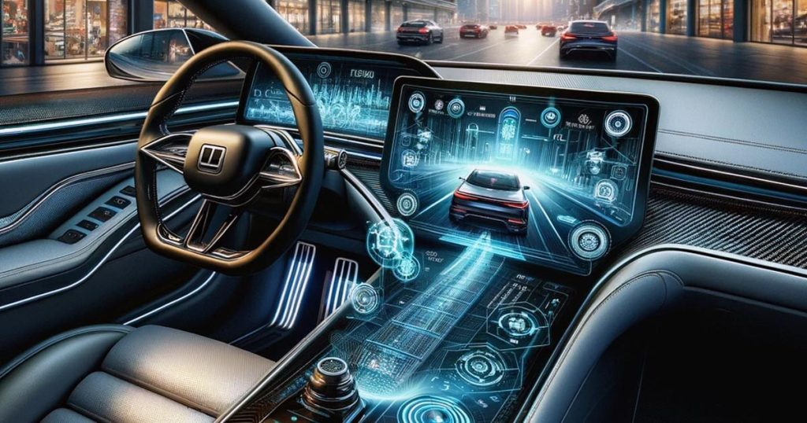
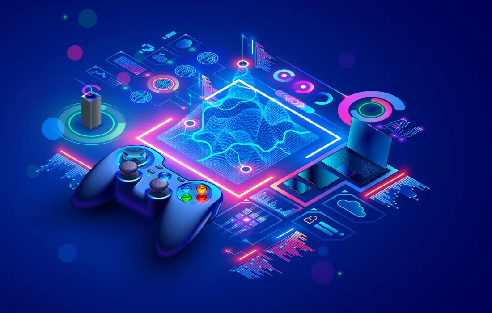
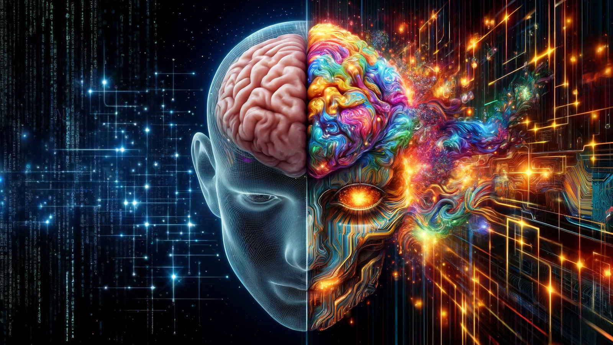
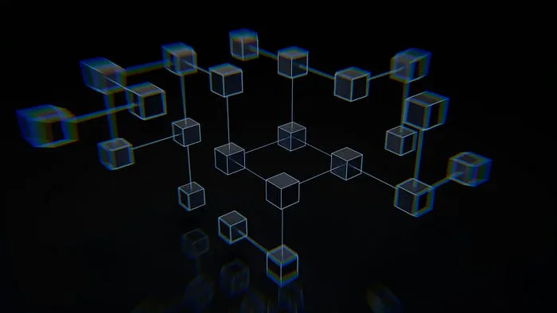
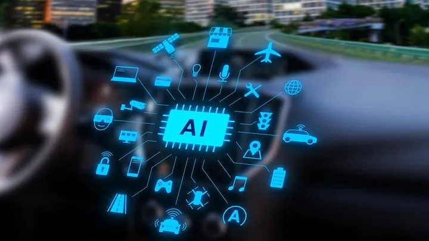

HSD Gelişim'in teknoloji, inovasyon ve kariyer dünyasındaki güncel gelişmeleri paylaştığı blog yazılarıyla bilgi dolu bir yolculuğa çıkın.

Elektrikli araçlarda mernzili etkileyen faktörler

Oyun geliştirme sürecinde doğru motor seçimi, başarının anahtarıdır. Bu yazıda oyun motorları hakkında bilgiler bulacaksınız.

Teknoloji gelişirken insan neden sadeleşiyor?
Geleneksel yöntemlerin yerini veri odaklı öngörülere bıraktığı bir döneme giriyoruz. Artık sadece “ne olduğunu” değil, “ne olacağını” yönetmek zorundayız. İşin Mutfağından Strateji Masasına: AI ile Kabuk Değişimi.
Gelecek, kod satırlarında kaybolanların değil; niyetini bir mühendis keskinliğiyle tasarlayıp, o tasviri ‘Agency’ sahibi bir iradeyle gerçeğe dönüştürenlerin olacak.

İş dünyasının karmaşık süreçlerini teknolojiyle buluşturan, değer odaklı çözüm üretme disiplinine dair kapsamlı bir bakış. Peki, nedir bu iş analizi? Sadece bir aracı kurum mu, yoksa başarının gizli formülü mü?

Otomotiv sektöründe yapay zeka ile gelişen akıllı güvenlik sistemleri ve çarpışma önleme teknolojileri.
Veriyi stratejik bir varlığa dönüştürerek rekabet avantajı sağlamanın ve dijital dünyanın en değerli kaynağını yönetmenin incelikleri.
Teknolojiyi hayatımızdan çıkarmak değil; onu doğru konumlandırıp kontrollü kullanmak için stratejiler.
Yapay zekanın oyun geliştirme süreçlerine getirdiği yenilikler ve gelecekteki etkileri.